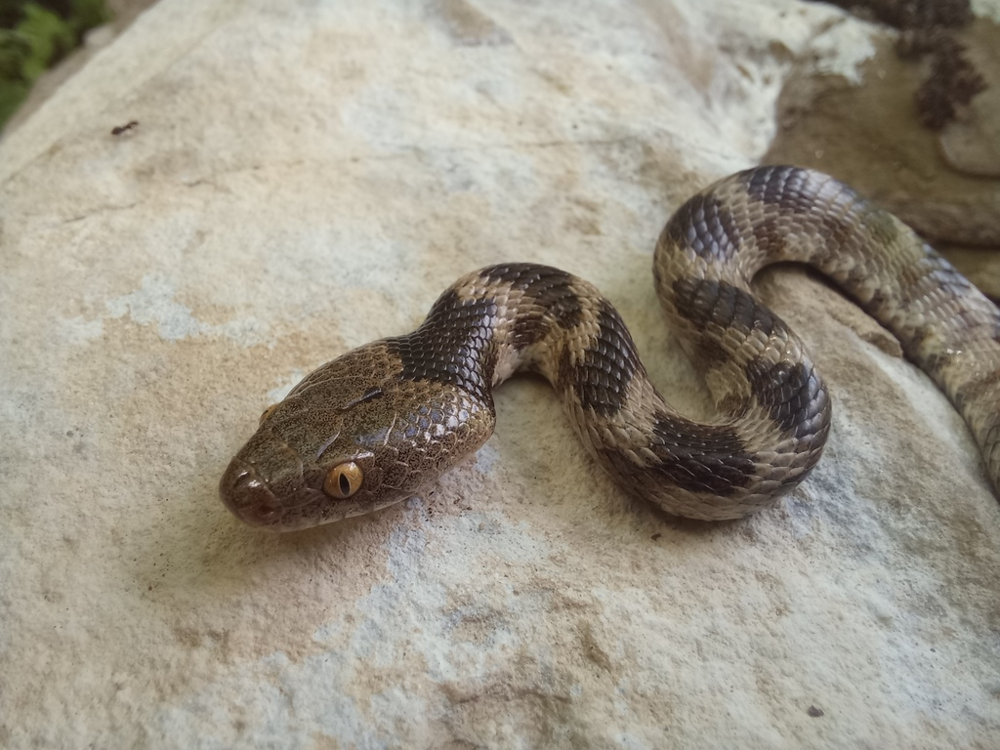
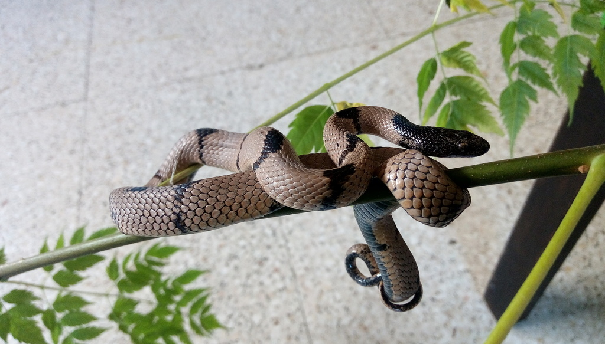
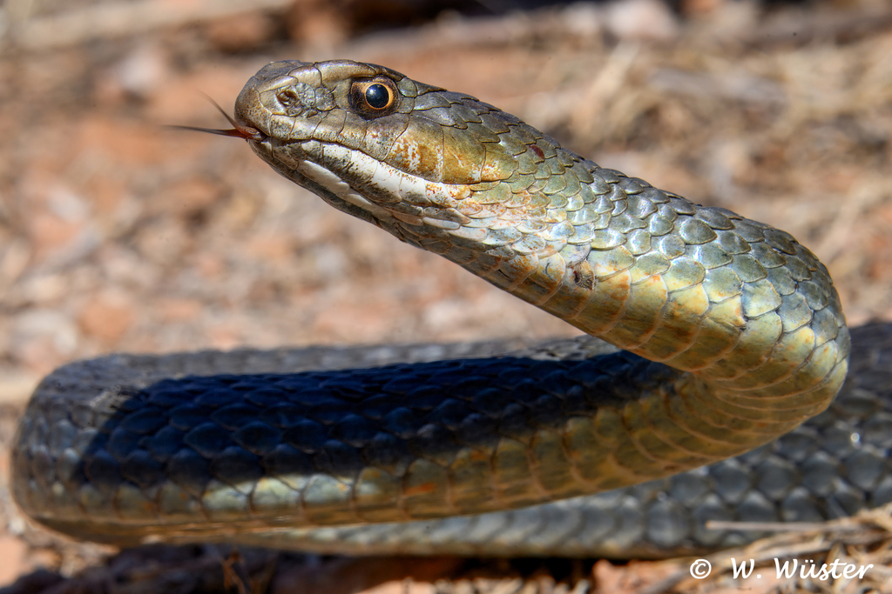

Dikey göz bebekleri ve zarif vücuduyla tanınan, uysal bir türdür.

Kedi gözlü yılanın yakın akrabasıdır, baş kısmındaki koyu renk ile ayrılır.

Gözlerinin üzerinde çıkıntı bulunur, oldukça meraklı bir yılandır.